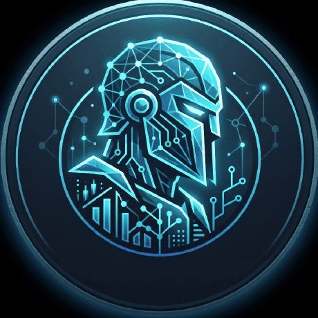

ps3-home-button-helper
PWA leggera per inviare il comando PS/Home a una PS3 compatibile da telefono, tablet o PC nella rete locale.

TitanGraGitHub portfolio / Italy
Creo utility leggere, webapp pratiche e piccoli progetti software con un taglio pulito: console game, PWA, strumenti Python e sperimentazioni web.
@TitanGra16
TitanGraconst titan = {
location: "Italy",
focus: ["PWA", "Java", "Python"],
repos: 9,
latest: "ps3-home-button-helper"
}Profilo
I progetti pubblici mostrano un percorso concreto: strumenti per il web, piccoli tool da terminale, esperimenti grafici e codice didattico. Questa pagina mette in primo piano ciò che conta di piu: cosa costruisci, con quali tecnologie e dove trovare il codice.
My projects
PWA leggera per inviare il comando PS/Home a una PS3 compatibile da telefono, tablet o PC nella rete locale.
Tris da terminale con modalita Player vs Player e Player vs Computer, struttura modulare e interfaccia console colorata.
Piccolo generatore di password pensato per tenere il codice semplice, leggibile e facile da estendere.
Esperimento Python dedicato a una visualizzazione orologio analogico e digitale.
Piattaforma interattiva per simulare la creazione di ordini personalizzati e studiare un flusso di ordinazione online.
Stack
Setup GitHub e prime utility Python.
Simulazione Ordine e primi flussi web.
Java, UI experiments e progetti didattici.
PWA PS3 con demo pubblica su GitHub Pages.
Contact